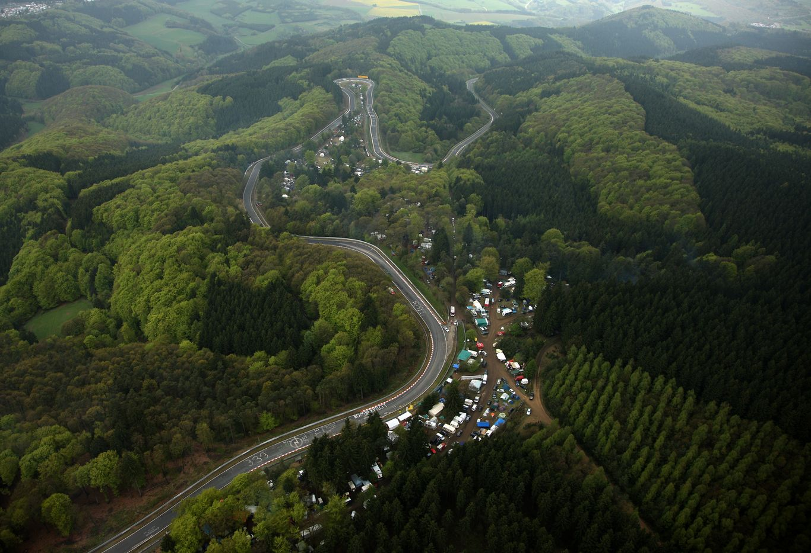
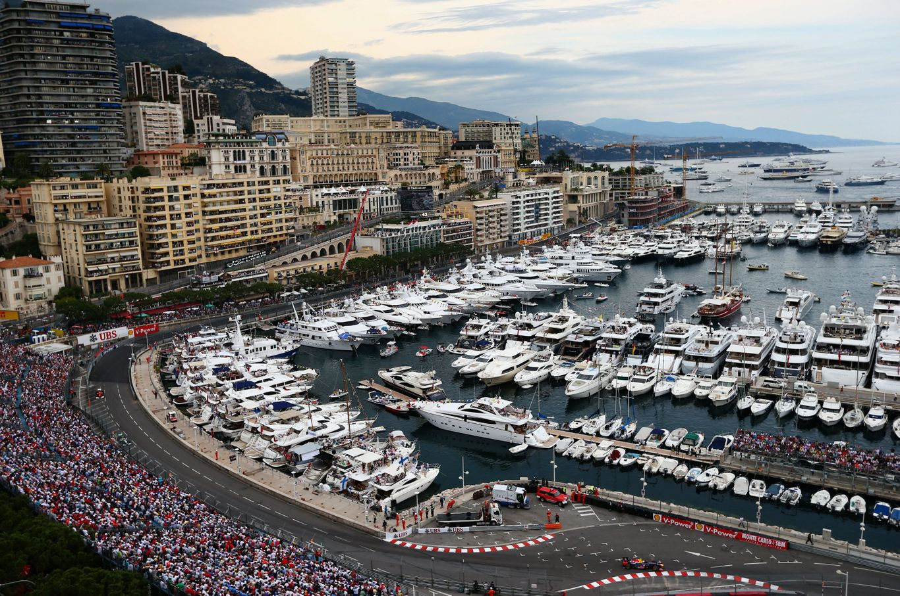
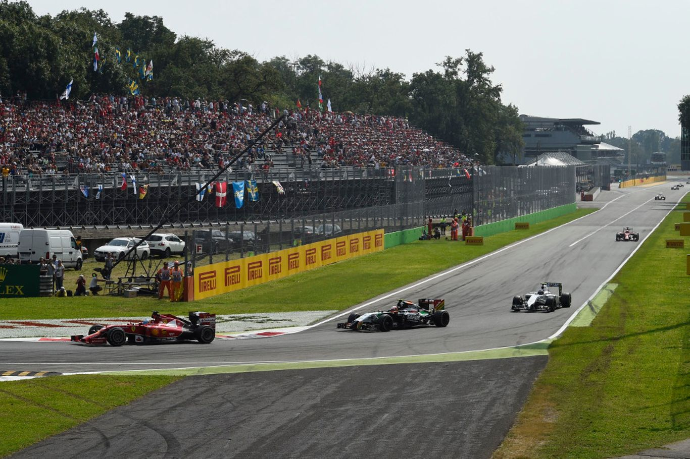
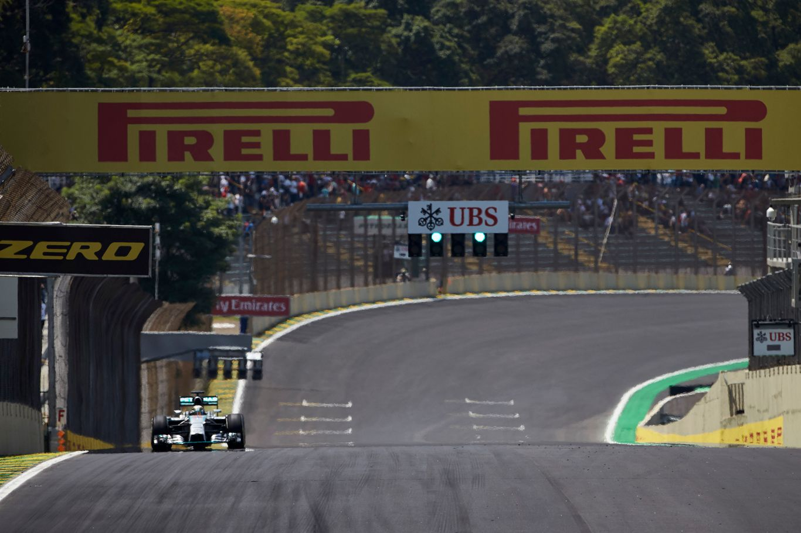
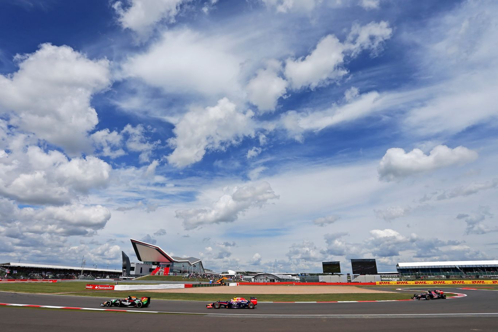
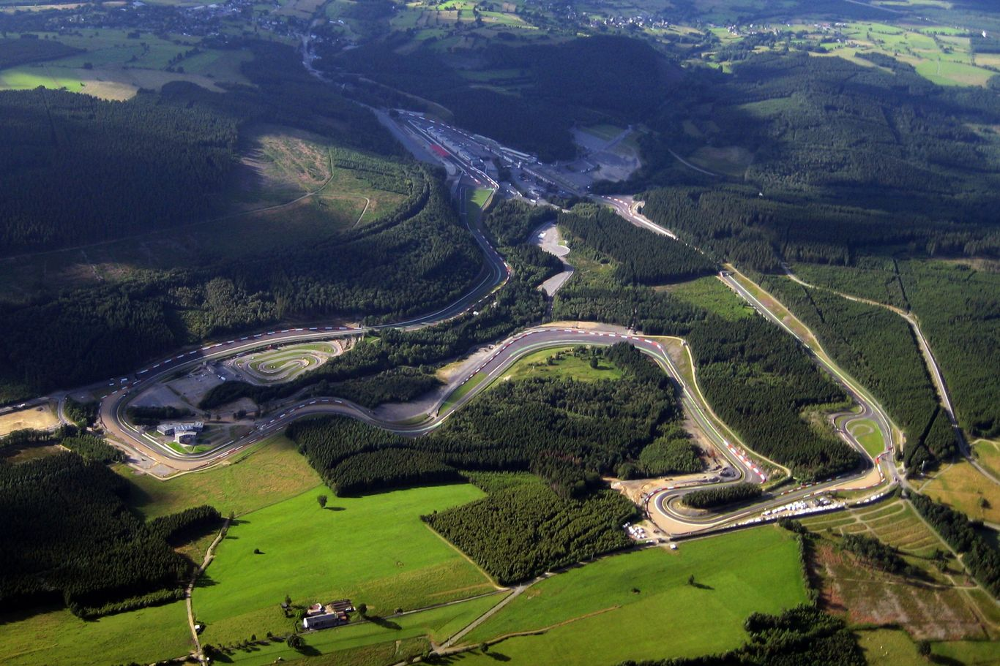

Nürburgring is a 150,000 person capacity motorsports complex located in the town of Nürburg, Rhineland-Palatinate, Germany.
It features a Grand Prix race track built in 1984, and a long Nordschleife "North loop" track, built in the 1920s, around the village and medieval castle of Nürburg in the Eifel mountains.
The north loop is 20.830 km (12.943 mi) long and contains more than 300 metres (1,000 feet) of elevation change from its lowest to highest points. Jackie Stewart nicknamed the track "The Green Hell".[2]
Originally, the track featured four configurations: the 28.265 km (17.563 mi)-long Gesamtstrecke ("Whole Course"), which in turn consisted of the 22.835 km (14.189 mi) Nordschleife ("North Loop") and the 7.747 km (4.814 mi) Südschleife ("South Loop").
There was also a 2.281 km (1.417 mi) warm-up loop called Zielschleife ("Finish Loop") or Betonschleife ("Concrete Loop"), around the pit area.

Circuit de Monaco is a 3.337 km (2.074 mi) street circuit laid out on the city streets of Monte Carlo and La Condamine around the harbour of the Principality of Monaco. It is commonly, and even officially,[1] referred to as "Monte Carlo" because it is largely inside the Monte Carlo neighbourhood of Monaco.
The circuit is annually used on three weekends in April–May for Formula One Monaco Grand Prix, Formula E Monaco ePrix and Historic Grand Prix of Monaco.
Formula One's respective feeder series over the years – Formula 3000, GP2 Series and today the Formula 2 championship and Porsche Supercup – also visit the circuit concurrently with Formula One.
The Monaco Grand Prix is one of the three events victories in which count towards the Triple Crown of Motorsport.

The Monza Circuit (Italian: Autodromo Nazionale di Monza, lit.'National Automobile Racetrack of Monza') is a 5.793 km (3.600 mi) race track near the city of Monza, north of Milan, in Italy. Built in 1922, it was the world's third purpose-built motor racing circuit after Brooklands and Indianapolis and the oldest in mainland Europe.
The circuit's biggest event is the Italian Grand Prix. With the exception of the 1980 running, the race has been hosted there since 1949.

The Autódromo José Carlos Pace, better known as Interlagos, is a 4.309 km (2.677 mi) motorsport circuit located in the city of São Paulo, in the neighborhood of Interlagos.
It was inaugurated on 12 May 1940, by the federal intervener Adhemar de Barros. The traditional name of the circuit and of the neighborhood itself comes from the fact that it is located in a region between two large artificial lakes, Guarapiranga and Billings, which were built in the beginning of the 20th century to supply the city with water and electricity.
In 1985 the circuit was renamed to honor the Formula 1 driver José Carlos Pace, who died in a plane crash in 1977. Attached to its facilities there is a Kart circuit named after Ayrton Senna. The circuit runs counterclockwise.

Silverstone Circuit is a motor racing circuit in England, near the Northamptonshire villages of Towcester, Silverstone and Whittlebury. It is the home of the British Grand Prix, which it first hosted as the 1948 British Grand Prix. The 1950 British Grand Prix at Silverstone was the first race in the newly created World Championship of Drivers.
The race rotated between Silverstone, Aintree and Brands Hatch from 1955 to 1986, but settled permanently at the Silverstone track in 1987.
The circuit also hosts the British round of the MotoGP series.

The Circuit de Spa-Francorchamps , frequently referred to as Spa, is a 7.004 km (4.352 mi) motor-racing circuit located in Stavelot, Belgium.
It is the current venue of the Formula One Belgian Grand Prix, hosting its first Grand Prix in 1925, and has held a Grand Prix every year since 1985 (except 2003 and 2006).
Spa also hosts several other international events including the 24 Hours of Spa, the World Endurance Championship 6 Hours of Spa-Francorchamps.
It is also home to the Uniroyal Fun Cup 25 Hours of Spa, one of the longest motor races in the world.
The circuit has undergone several redesigns through its history, most extensively in 1979 when the track was modified and shortened from a 14.100 km (8.761 mi) circuit using public roads to a 7.004 km (4.352 mi) permanent circuit due to safety concerns with the old circuit.